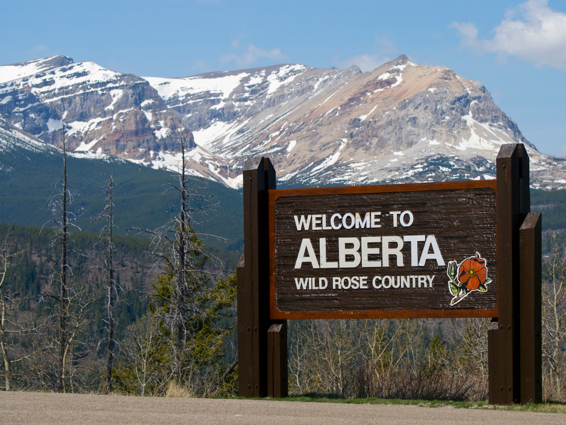

Glauber Marques | WDD 130
Hello! My name is Glauber Marques and I am from Joao Pessoa, Brazil, but I'm living in Calgary, Canada.
I enjoy my life, my family, technology and everything that comes from that
Alberta

Alberta is a province in the western Canada, part of praires. It is bordered by Saskatchewan to the east, Northwest Territories to the north, Idaho to the north, Montana (USA) to the south,
and British Columbia to the west. It also touches a corner of Idaho (USA). The province Its landscape encompasses mountains, prairies, desert badlands and vast coniferous forests. It has
more than 600 lakes, and rich mineral deposits. In the west, the Canadian Rocky Mountain Parks have glaciers in the Columbia Icefields. The Waterton Glacier International Peace Park is a
biosphere reserve that straddles the southern border with the USA.